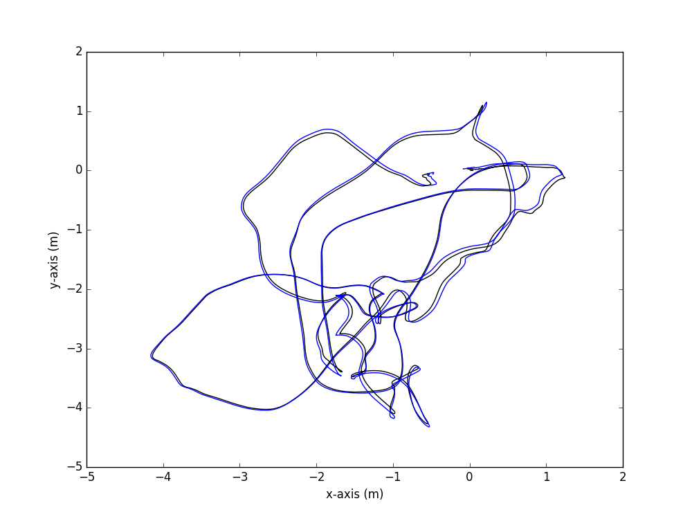
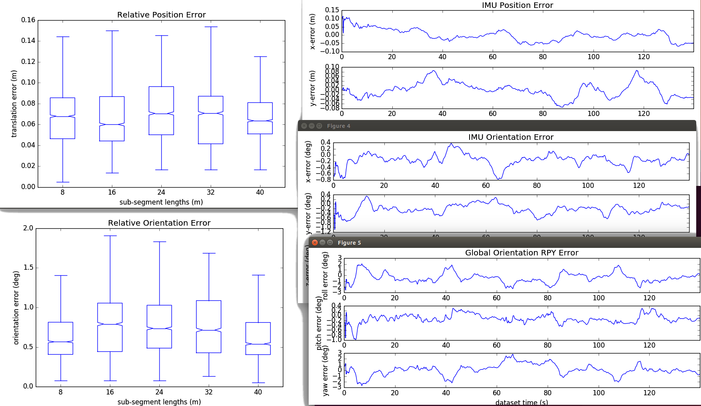
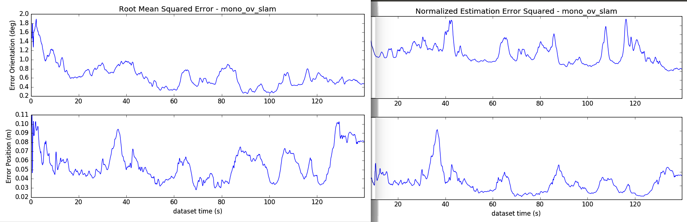

Filter Error Evaluation Methods
Collection
The first step in any evaluation is to first collect the estimated trajectory of the proposed systems. Since we are interested in robotic application of our estimators we want to record the estimate at the current timestep (as compared to a "smoothed" output or one that includes loop-closures from future timesteps). Within the ROS framework, this means that we just need to publish the current estimate at the current timestep. We recommend using the following ov_eval::PoseWithCovarianceStamped, PoseStamped, TransformStamped, and Odometry.
<node name="recorder_estimate" pkg="ov_eval" type="pose_to_file" output="screen"> <param name="topic" type="str" value="/ov_msckf/poseimu" /> <param name="topic_type" type="str" value="PoseWithCovarianceStamped" /> <param name="output" type="str" value="/home/user/data/traj_log.txt" /> </node>
Transformation
We now need to ensure both our estimated trajectory and groundtruth are in the correct formats for us to read in. We need things to be in the RPE text file format (i.e. time(s), px, py, pz, qx, qy, qz, qw). We have a nice helper script that will transform ASL / EuRoC groundtruth files to the correct format. By default the EuRoC groundtruth has the timestamp in nanoseconds and the quaternion is in an incorrect order (i.e. time(ns), px, py, pz, qw, qx, qy, qz). A user can either process all CSV files in a given folder, or just a specific one.
rosrun ov_eval format_convert folder/path/ rosrun ov_eval format_convert file.csv
In addition we have a specific folder structure that is assumed. We store trajectories by first their algorithm name and then a folder for each dataset this algorithm was run on. The folder names of the datasets need to match the groundtruth trajectory files which should be in their own separate folder. Please see the example recorded datasets for how to structure your folders.
truth/
dateset_name_1.txt
dateset_name_2.txt
algorithms/
open_vins/
dataset_name_1/
run1.txt
run2.txt
run3.txt
dataset_name_2/
run1.txt
run2.txt
run3.txt
okvis_stereo/
dataset_name_1/
run1.txt
run2.txt
run3.txt
dataset_name_2/
run1.txt
run2.txt
run3.txt
vins_mono/
dataset_name_1/
run1.txt
run2.txt
run3.txt
dataset_name_2/
run1.txt
run2.txt
run3.txtProcessing & Plotting
Now that we have our data recorded and in the correct format we can now work on processing and plotting it. In the next few sections we detail how to do this for absolute trajectory error, relative pose error, normalized estimation error squared, and bounded root mean squared error plots. We will first process the data into a set of output text files which a user can then use to plot the results in their program or language of choice. The align mode of all the following commands can be of type posyaw, posyawsingle, se3, se3single, sim3, and none.
Script "plot_trajectories"
To plot the data we can us the following command which will plot a 2d xy and z-time position plots. It will use the filename as the name in the legend, so you can change that to change the legend or edit the code.
rosrun ov_eval plot_trajectories <align_mode> <file_gt.txt> ... <file_est9.txt> rosrun ov_eval plot_trajectories posyaw 1565371553_estimate.txt truths/V1_01_easy.txt

Script "error_singlerun"
The single run script will plot statistics and also 3 bounds if available. One can use this to see consistency of the estimator or debug how the current run has gone. It also reports to console the average RMSE and RPE values for this run along with the number of samples. To change the RPE distances you will need to edit the code currently.
rosrun ov_eval error_singlerun <align_mode> <file_gt.txt> <file_est.txt> rosrun ov_eval error_singlerun posyaw 1565371553_estimate.txt truths/V1_01_easy.txt
Example output:
[ INFO] [1583422165.069376426]: [COMP]: 2813 poses in 1565371553_estimate => length of 57.36 meters [ INFO] [1583422165.091423722]: ====================================== [ INFO] [1583422165.091438299]: Absolute Trajectory Error [ INFO] [1583422165.091445338]: ====================================== [ INFO] [1583422165.091453099]: rmse_ori = 0.677 | rmse_pos = 0.055 [ INFO] [1583422165.091459679]: mean_ori = 0.606 | mean_pos = 0.051 [ INFO] [1583422165.091466321]: min_ori = 0.044 | min_pos = 0.001 [ INFO] [1583422165.091474211]: max_ori = 1.856 | max_pos = 0.121 [ INFO] [1583422165.091481730]: std_ori = 0.302 | std_pos = 0.021 [ INFO] [1583422165.127869924]: ====================================== [ INFO] [1583422165.127891080]: Relative Pose Error [ INFO] [1583422165.127898322]: ====================================== [ INFO] [1583422165.127908551]: seg 8 - median_ori = 0.566 | median_pos = 0.068 (2484 samples) [ INFO] [1583422165.127919603]: seg 16 - median_ori = 0.791 | median_pos = 0.060 (2280 samples) [ INFO] [1583422165.127927646]: seg 24 - median_ori = 0.736 | median_pos = 0.070 (2108 samples) [ INFO] [1583422165.127934904]: seg 32 - median_ori = 0.715 | median_pos = 0.071 (1943 samples) [ INFO] [1583422165.127942178]: seg 40 - median_ori = 0.540 | median_pos = 0.063 (1792 samples)
Script "error_dataset"
This dataset script will evaluate how a series of algorithms compare on a single dataset. Normally this is used if you just have single dataset you want to compare algorithms on, or compare a bunch variations of your algorithm to a simulated trajectory. In the console it will output the ATE 3D and 2D, along with the 3D RPE and 3D NEES for each method after it performs alignment. To change the RPE distances you will need to edit the code currently.
rosrun ov_eval error_dataset <align_mode> <file_gt.txt> <folder_algorithms> rosrun ov_eval error_dataset posyaw truths/V1_01_easy.txt algorithms/
Example output:
[ INFO] [1583422654.333642977]: ====================================== [ INFO] [1583422654.333915102]: [COMP]: processing mono_ov_slam algorithm [ INFO] [1583422654.362655719]: [TRAJ]: q_ESTtoGT = 0.000, 0.000, -0.129, 0.992 | p_ESTinGT = 0.978, 2.185, 0.932 | s = 1.00 .... [ INFO] [1583422654.996859432]: [TRAJ]: q_ESTtoGT = 0.000, 0.000, -0.137, 0.991 | p_ESTinGT = 0.928, 2.166, 0.957 | s = 1.00 [ INFO] [1583422655.041009388]: ATE: mean_ori = 0.684 | mean_pos = 0.057 [ INFO] [1583422655.041031730]: ATE: std_ori = 0.14938 | std_pos = 0.01309 [ INFO] [1583422655.041039552]: ATE 2D: mean_ori = 0.552 | mean_pos = 0.053 [ INFO] [1583422655.041046362]: ATE 2D: std_ori = 0.17786 | std_pos = 0.01421 [ INFO] [1583422655.044187033]: RPE: seg 7 - mean_ori = 0.543 | mean_pos = 0.065 (25160 samples) [ INFO] [1583422655.047047771]: RPE: seg 14 - mean_ori = 0.593 | mean_pos = 0.060 (23470 samples) [ INFO] [1583422655.049672955]: RPE: seg 21 - mean_ori = 0.664 | mean_pos = 0.081 (22050 samples) [ INFO] [1583422655.052090494]: RPE: seg 28 - mean_ori = 0.732 | mean_pos = 0.083 (20520 samples) [ INFO] [1583422655.054294322]: RPE: seg 35 - mean_ori = 0.793 | mean_pos = 0.090 (18960 samples) [ INFO] [1583422655.055676035]: RMSE: mean_ori = 0.644 | mean_pos = 0.056 [ INFO] [1583422655.056987984]: RMSE 2D: mean_ori = 0.516 | mean_pos = 0.052 [ INFO] [1583422655.058269163]: NEES: mean_ori = 793.646 | mean_pos = 13.095 [ INFO] [1583422656.182660653]: ====================================== [ INFO] [1583422656.183065588]: [COMP]: processing mono_ov_vio algorithm [ INFO] [1583422656.209545279]: [TRAJ]: q_ESTtoGT = 0.000, 0.000, -0.148, 0.989 | p_ESTinGT = 0.931, 2.169, 0.971 | s = 1.00 .... [ INFO] [1583422656.791523636]: [TRAJ]: q_ESTtoGT = 0.000, 0.000, -0.149, 0.989 | p_ESTinGT = 0.941, 2.163, 0.974 | s = 1.00 [ INFO] [1583422656.835407991]: ATE: mean_ori = 0.639 | mean_pos = 0.076 [ INFO] [1583422656.835433475]: ATE: std_ori = 0.05800 | std_pos = 0.00430 [ INFO] [1583422656.835446222]: ATE 2D: mean_ori = 0.514 | mean_pos = 0.070 [ INFO] [1583422656.835457020]: ATE 2D: std_ori = 0.07102 | std_pos = 0.00492 [ INFO] [1583422656.838656567]: RPE: seg 7 - mean_ori = 0.614 | mean_pos = 0.092 (25160 samples) [ INFO] [1583422656.841540191]: RPE: seg 14 - mean_ori = 0.634 | mean_pos = 0.092 (23470 samples) [ INFO] [1583422656.844219466]: RPE: seg 21 - mean_ori = 0.632 | mean_pos = 0.115 (22050 samples) [ INFO] [1583422656.846646272]: RPE: seg 28 - mean_ori = 0.696 | mean_pos = 0.119 (20520 samples) [ INFO] [1583422656.848862913]: RPE: seg 35 - mean_ori = 0.663 | mean_pos = 0.154 (18960 samples) [ INFO] [1583422656.850321777]: RMSE: mean_ori = 0.600 | mean_pos = 0.067 [ INFO] [1583422656.851673985]: RMSE 2D: mean_ori = 0.479 | mean_pos = 0.060 [ INFO] [1583422656.853037942]: NEES: mean_ori = 625.447 | mean_pos = 10.629 [ INFO] [1583422658.194763413]: ====================================== ....
Script "error_comparison"
This compares all methods to each other on a series of datasets. For example, you run a bunch of methods on all the EurocMav datasets and then want to compare. This will do the RPE over all trajectories, and an ATE for each dataset. It will print the ATE and RPE for each method on each dataset in the console. Then following the Filter Evaluation Metrics, these are averaged over all the runs and datasets. Finally at the end it outputs a nice latex table which can be directly used in a paper. To change the RPE distances you will need to edit the code currently.
rosrun ov_eval error_comparison <align_mode> <folder_groundtruth> <folder_algorithms> rosrun ov_eval error_comparison posyaw truths/ algorithms/
Example output:
[ INFO] [1583425216.054023187]: [COMP]: 2895 poses in V1_01_easy.txt => length of 58.35 meters [ INFO] [1583425216.092355692]: [COMP]: 16702 poses in V1_02_medium.txt => length of 75.89 meters [ INFO] [1583425216.133532429]: [COMP]: 20932 poses in V1_03_difficult.txt => length of 78.98 meters [ INFO] [1583425216.179616651]: [COMP]: 22401 poses in V2_01_easy.txt => length of 36.50 meters [ INFO] [1583425216.225299463]: [COMP]: 23091 poses in V2_02_medium.txt => length of 83.23 meters [ INFO] [1583425216.225660364]: ====================================== [ INFO] [1583425223.560550101]: [COMP]: processing mono_ov_vio algorithm [ INFO] [1583425223.560632706]: [COMP]: processing mono_ov_vio algorithm => V1_01_easy dataset [ INFO] [1583425224.236769465]: [COMP]: processing mono_ov_vio algorithm => V1_02_medium dataset [ INFO] [1583425224.855489521]: [COMP]: processing mono_ov_vio algorithm => V1_03_difficult dataset [ INFO] [1583425225.659183593]: [COMP]: processing mono_ov_vio algorithm => V2_01_easy dataset [ INFO] [1583425226.442217424]: [COMP]: processing mono_ov_vio algorithm => V2_02_medium dataset [ INFO] [1583425227.366004330]: ====================================== .... [ INFO] [1583425261.724448413]: ============================================ [ INFO] [1583425261.724469372]: ATE LATEX TABLE [ INFO] [1583425261.724481841]: ============================================ & \textbf{V1\_01\_easy} & \textbf{V1\_02\_medium} & \textbf{V1\_03\_difficult} & \textbf{V2\_01\_easy} & \textbf{V2\_02\_medium} & \textbf{Average} \\\hline mono\_ov\_slam & 0.699 / 0.058 & 1.675 / 0.076 & 2.542 / 0.063 & 0.773 / 0.124 & 1.538 / 0.074 & 1.445 / 0.079 \\ mono\_ov\_vio & 0.642 / 0.076 & 1.766 / 0.096 & 2.391 / 0.344 & 1.164 / 0.121 & 1.248 / 0.106 & 1.442 / 0.148 \\ .... [ INFO] [1583425261.724647970]: ============================================ [ INFO] [1583425261.724655060]: ============================================ [ INFO] [1583425261.724661046]: RPE LATEX TABLE [ INFO] [1583425261.724666910]: ============================================ & \textbf{8m} & \textbf{16m} & \textbf{24m} & \textbf{32m} & \textbf{40m} & \textbf{48m} \\\hline mono\_ov\_slam & 0.661 / 0.074 & 0.802 / 0.086 & 0.979 / 0.097 & 1.061 / 0.105 & 1.145 / 0.120 & 1.289 / 0.122 \\ mono\_ov\_vio & 0.826 / 0.094 & 1.039 / 0.106 & 1.215 / 0.111 & 1.283 / 0.132 & 1.342 / 0.151 & 1.425 / 0.184 \\ .... [ INFO] [1583425262.514587296]: ============================================